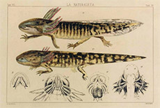
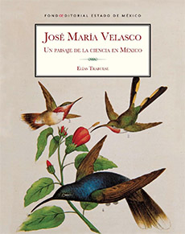

Referencias
- Altamirano, P.M.E. 1997. José María Velasco. Ciencias, enero-marzo (45): 32-35.
- Moyssén, E.X. 1997. José María Velasco: el paisajista. Consejo Nacional para la cultura y las Artes. México, D.F. 29p.
- Silva,B.Á. 1991. La paleobiología en las pinturas de José María Velasco. Sociedad Mexicana de Paleontología, Publicaciones especiales no.2. 64 p.
- Solís,O.H. 1980. José María Velasco: naturalista, científico y pintor. Tesis Maestría, Universidad Nacional Autónoma de México, Facultad de Filosofía y Letras. 109 p.
José María Velasco
1840 - 1912
José María Tranquilino Francisco de Jesús Velasco Gómez Obregón fue un famoso paisajista del siglo XIX que se también se interesó por el estudio de la vida. Nació en Temascalcingo, Estado de México en 1840 y murió en 1912.
En la ciudad de México realizó sus estudios primarios. Más tarde, en 1855 ingresó a la Academia de San Carlos y en 1858 cursó la carrera de pintor. Durante su aprendizaje se dio cuenta de la necesidad de conocer profundamente aquello que dibujaba y pintaba así que para complementar sus obra artística ingresó a la Academia de Medicina, donde cursó botánica, zoológica, anatomía, física y matemáticas.
En 1868 comenzó a colaborar en “La Flora del Valle de México”, una obra de botánica por entregas en la cual hacía dibujos para ilustrar los fascículos. Fue miembro de la Sociedad Mexicana de Historia Natural (SMHN) donde realizó muchas láminas que servían de apoyo gráfico para los artículos de otros autores que trataban temas de botánica, zoología, geología y paleontología. En esta sociedad fue secretario, vicepresidente y presidente interino.
La SMHN tenía la publicación La Naturaleza, en la cual Velasco publicó dio a conocer sus investigaciones. Su primer aporte como hombre de ciencia fue un estudio botánico sobre las cactáceas de México. Su obra biológica más importante fue “Descripción, metamorfosis y costumbres de una especie nueva del género Siredon”, con esta dio a conocer datos precisos y hasta entonces desconocidos de la metamorfosis del ajolote.
Por más de 35 años, Velasco trabajó en el Museo Nacional como investigador. Uno de los productos de su estancia en el museo fue la realización de varios lienzos en los que representó la evolución de la vida y las eras geológicas.
Mis favoritos
- 
- Litografía. Descripción, metamorfosis y costumbres de una especie nueva de Siredon
- Imagen: Colección Patricia Phelps de Cisneros
Mis lugares
Mis ideas
- 
- José María Velasco, un paisaje de la Ciencia en México.
- Fondo Editorial del Estado de México.